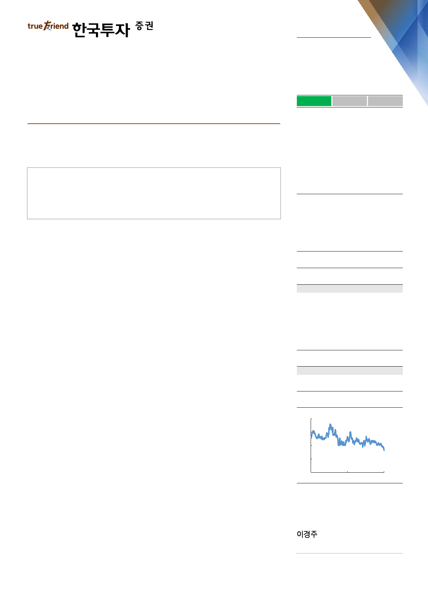

실적 Review
2019. 5. 14
CJ제일제당(097950)
하 회
부 합
영업이익의 컨센서스 대비를 의미
상 회
한숨 돌릴 틈?
매수(유지)
1분기 실적 식품부문의 원료, 고정비 부담으로 컨센서스 크게 하회
2분기 이후 슈완스 실적 본격 반영, 가격 인상 효과 발휘돼 모멘텀 개선 예상
그러나 바이오 경쟁사 증설, 원화약세 등 외부 변수 만만치 않아
Facts : 외형 성장 불구 수익성 악화
1분기 매출액은 헬스케어사업 매각에도 불구하고 물류의 성장과 슈완스 실적 반영
효과(3월 한달 반영 매출액 2,403억원, 영업이익 116억원) 등에 힘입어 15.4%
의 큰 폭으로 증가했다. 그러나 영업이익률이 전년동기 4.8%에서 3.6%로 하락하
며 영업이익은 14.8% 감소했다. 원재료비 상승과 가공식품의 신공장 가동에 따른
고정비 부담 등이 원인이다. 영업외수지는 이자 비용이 늘었고 베트남법인의 통합
작업이나 슈완스 인수와 관련 잡손실 등의 일회성 요인들로 인해 좀 더 악화됐다.
Pros & cons : 핵산 제외 실적 악화
핵산 매출액이 전년동기대비 28% 증가하며 호조세를 이어간 것을 제외하고는 크
게 개선된 분야는 보이지는 않는다. 가공식품의 매출액은 해외에서는 42%(슈완스
제외), 국내에서는 16%나 증가했다. 하지만 가공식품의 영업이익률은 전년동기
10%에서 6% 수준으로 하락한 것으로 보여 의미는 퇴색됐다. 지난해 말 가동된
진천공장의 감가상각비, 그리고 쌀 등 원료 가격 상승의 여파가 예상보다 컸다. 생
물자원도 베트남의 구제역 및 인도네시아의 육계가격 하락으로 적자폭이 확대됐다.
Action : 내부 모멘텀 개선되나 외부 변수가 부담
2분기부터는 연간 매출액 2.3조원 수준의 슈완스의 실적이 모든 기간에 걸쳐 반영
될 것이다. 원재료의 가격 상승률도 높은 기저로 축소될 전망이다. 무엇보다 가공
식품부문에서 2월의 가격 인상이 본격적으로 효과를 나타낼 것이라는 점이 긍정
적이다. 그러나 원/달러 환율의 상승, 메치오닌/트립토판/라이신의 시황이 변수다.
원화약세는 헤지(최대 비율 70% 추정)를 한다 하더라도 순외화부채가 8천억원
(슈완스 제외) 수준인 동사에게는 부담스러운 뉴스이다. 또 바이오시장의 경쟁사
증설, 그리고 아프리카 돼지 열병으로 인한 중국 사료시장의 위축은 당장 완벽히
해결되긴 어려운 이슈다. 1분기 업황이 최악이었다 판단되나 2분기 이후의 개선
폭에 대해서도 눈높이를 낮출 필요가 있다. 다만 이러한 어려운 시황을 주가가
목표주가: 410,000원(유지)
Stock Data
KOSPI(5/13)
주가(5/13)
시가총액(십억원)
발행주식수(백만)
52주 최고/최저가(원)
일평균거래대금(6개월, 백만원)
유동주식비율/외국인지분율(%)
주요주주(%) CJ 외 8 인
국민연금
2,079
298,500
4,494
15
381,500/298,500
11,537
51.9/21.1
45.5
12.6
Valuation 지표
PER(x)
PBR(x)
ROE(%)
DY(%)
EV/EBITDA(x)
EPS(원)
BPS(원)
2018A
6.0
1.1
21.5
1.1
10.1
55,416
298,085
2019F
17.3
1.0
5.6
1.2
8.7
17,243
311,307
2020F
11.5
0.9
8.0
1.4
7.7
25,935
332,429
주가상승률
절대주가(%)
KOSPI 대비(%p)
1개월
(8.6)
(1.7)
6개월
(14.0)
(14.4)
12개월
(16.3)
(0.2)
주가추이
(천원)
440
380
320
260
200
May-17
자료: FnGuide
May-18
May-19
kjlee@truefriend.com